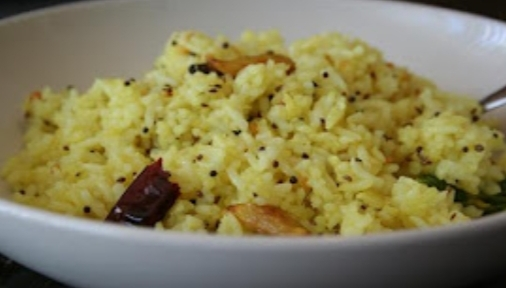

Harshitha's Recipe for making tasty and Healthy Carom Rice !!!

Ingredients
Must Have
- 2 teaspoon's of Carom seeds
- 200 grams Rice
- 10 grams Oil
- 5-6 Cloves
- 4 Dried Red Chillies
- 1 teaspoon Tampering Seeds
- 2 stards Curry Leaves
- 1/2 teaspoon Turmeric
- Salt as per taste
Optional Items
- Onions
- Chillies
- Peanuts
- Sesame Oil
Making process
- First, Heat the Pan and add oil
- Once the oil turn hot, Add tampered seeds, cloves and dried red chillies
- Now, Wait for 2 minutes, before adding our hero ingregient Carom seeds
- Again fry the Carom seed in the pan for a minute and add Rice into it
- Next, add Salt and turmeric(optional)
- Let it cook for another minute and turn off the stove
- Serve it Hot, And Enjoy:)
!! Tasty and Healty Carom Rice is ready to Serve. Enjoy it on a Rainy Day for Utmost Satisfaction !!